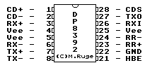

Previous
Next
TOC
Die Pinbelegung des National Semiconductor DP8392CN

General Description
The DP8392C Coaxial Transceiver Interface (CTI) is a coaxial cable
line driver/receiver for Ethernet/Thin Ethernet (Cheapernet) type
local area networks. The CTI is connected between the coaxial cable
and the Data Terminal Equipment (DTE). In Ethernet applications the
transceiver is usually mounted within a dedicated enclosure and is
connected to the DTE via a transceiver cable. In Cheapernet appli-
cations, the CTI is typically located within the DTE and connects to
the DTE through isolation transformers only. The CTI consists of a
Receiver, Transmitter, Collision Detector, and a Jabber Timer. The
Transmitter connects directly to a 50 ohm coaxial cable where it is
used to drive the coax when transmitting. During transmission, a
jabber timer is initiated to disable the CTI transmitter in the
event of a longer than legal leng the data packet. Collision Detec-
tion circuitry monitors the signals on the coax to determine the
presence of colliding packets and signals the DTE in the event of a
collision.
The CTI is part of a three chip set that implements the complete
IEEE 802.3 compatible network node electronics as shown below. The
other two chips are the DP8391 Serial Network Interface (SNI) and
the DP8390 Network Interface Controller (NIC). The SNI provides the
Manchester encoding and decoding functions; whereas the NIC handles
the Media Access Protocol and the buffer management tasks. Isolation
between the CTI and the SNI is an IEEE 802.3 requirement that can be
easily satisfied on signal lines using a set of pulse transformers
that come in a standard DIP. However, the power isolation for the
CTI is done by DC-to-DC conversion through a power transformer.
Kapitel Die Pinbelegung des National Semiconductor DP8392CN, Seite 1